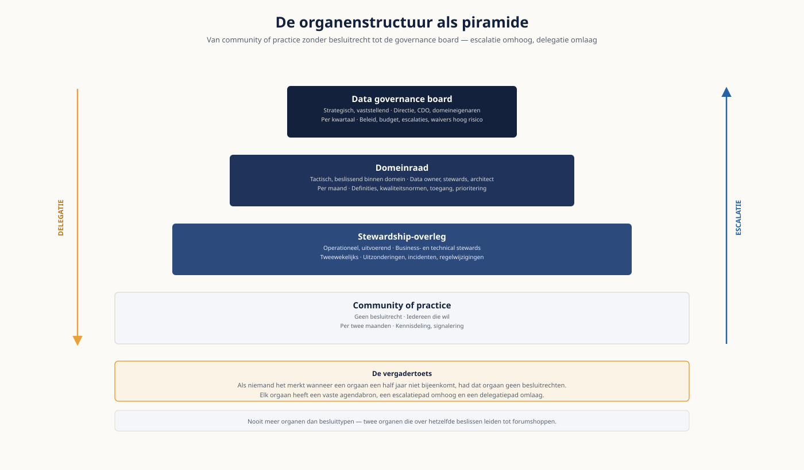
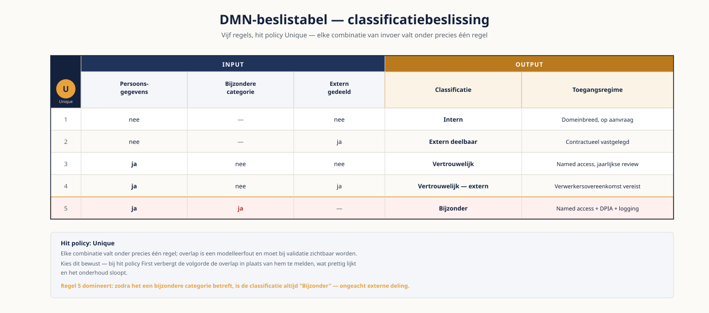

Deel 16 — Data governance operating model
Niveau 2 — Praktijk · Reader
Voorbereiding, geen vervanging
Deze cursusmap is onafhankelijk ontwikkeld door Ductus B.V. Ductus is niet gelieerd aan, geaccrediteerd door of goedgekeurd door DAMA International, IIBA, IAPP, de EDM Association of Microsoft.
Dit materiaal bereidt voor op de genoemde examens en vervangt het officiële examenmateriaal niet. Bodies of knowledge, handboeken en examenblueprints worden hier niet gereproduceerd; deelnemers schaffen die bronnen zelf aan.
Alle genoemde merken zijn eigendom van hun respectieve houders. Examengegevens gecontroleerd in augustus 2026 — verifieer vóór inschrijving bij de bron.
1. Waar dit deel over gaat
Governanceprogramma’s stranden zelden op inhoud. Ze stranden omdat niemand weet wie beslist. Een definitiediscussie over "actieve deelnemer" sleept een jaar voort, niet omdat het begrip moeilijk is, maar omdat er geen orgaan is dat de knoop mág doorhakken. Het operating model is het antwoord op precies die vraag: wie beslist wat, op grond waarvan, binnen welke termijn, en wat gebeurt er bij onenigheid.
In deel 14 heb je gezien hoe je master- en referentiedata inricht, in deel 15 hoe je kwaliteit als proces organiseert. Beide leunen op besluiten die iemand moet nemen. Dit deel bouwt de structuur waarin die besluiten vallen — en modelleert die structuur in notaties die je al beheerst: BPMN, CMMN en DMN.
Leerdoelen
- Je onderscheidt de zes bouwstenen van een governance operating model en benoemt per bouwsteen wat er misgaat als hij ontbreekt.
- Je ontwerpt een organenstructuur waarin elk orgaan een mandaat, een agendabron en een escalatiepad heeft.
- Je stelt een besluitrechtenmatrix op voor de zeven terugkerende besluittypen en verdedigt de keuzes daarin.
- Je kiest per governanceproces de passende notatie — BPMN, CMMN of DMN — en onderbouwt die keuze.
- Je kiest tussen centrale, decentrale, federatieve en hub-and-spoke inrichting op grond van expliciete criteria.
- Je stelt een adoptieaanpak en een KPI-set op die gedrag meten in plaats van activiteit.
2. Wat een operating model is — en wat niet
Data governance is het geheel van besluitrechten en verantwoordingslijnen over data, samen met de organen, rollen, processen en normen waarmee die rechten worden uitgeoefend. Het operating model is de concrete inrichting daarvan in één specifieke organisatie.
Twee dingen doet governance, en niet meer dan dat. Het verdeelt schaarste — aandacht, budget, prioriteit, de tijd van stewards. En het beslecht conflicten — over definities, over eigenaarschap, over toegang. Alles wat een governance-inrichting doet dat niet op één van die twee is terug te voeren, is overhead.
Drie hardnekkige misverstanden
- Governance is geen datakwaliteitsproject. Kwaliteit is een van de onderwerpen waarover besloten wordt, niet het doel van de inrichting.
- Governance is geen vergaderstructuur. Organen zonder besluitrechten zijn overleg, en overleg verandert niets.
- Governance is geen tool. Een catalogus registreert besluiten; hij neemt ze niet.
De vergadertoets
Als niemand het merkt wanneer een governance-orgaan een half jaar niet bijeenkomt, had dat orgaan geen besluitrechten. Loop bij elk voorgesteld orgaan deze toets langs voordat je het in het ontwerp opneemt.
De zes bouwstenen
Elk werkend operating model bevat dezelfde zes elementen. Ze zijn niet optioneel en ze hangen aan elkaar: een besluitrecht zonder orgaan is een wens, een orgaan zonder mandaat is een praatgroep.
| # | Bouwsteen | Kernvraag | Als hij ontbreekt |
|---|---|---|---|
| 1 | Mandaat en scope | Waar komt het gezag vandaan en waarover gaat het? | Elke beslissing wordt heronderhandeld |
| 2 | Organen | Waar valt het besluit? | Besluiten vallen in de lijn, per afdeling anders |
| 3 | Rollen | Wie is aanspreekbaar? | Eigenaarschap verdampt bij de eerste reorganisatie |
| 4 | Besluitrechten | Wie beslist wat, binnen welke termijn? | Alles escaleert, of niets |
| 5 | Processen en normen | Hoe verloopt het besluit en wat geldt er? | Besluiten zijn niet reproduceerbaar of vindbaar |
| 6 | Meting en bijsturing | Werkt het? | Het programma sterft stil na achttien maanden |
3. Bouwsteen 1 — Mandaat en scope
Mandaat is niet hetzelfde als draagvlak. Draagvlak is prettig; mandaat is de bevoegdheid om een besluit te nemen dat ook geldt voor wie het er niet mee eens is. In de praktijk komt mandaat uit drie bronnen, en de bron bepaalt hoe stevig het staat.
- Een bestuursbesluit met vastgelegde bevoegdheid — het sterkst, maar traag te verkrijgen.
- Een toezichtseis of auditbevinding — snel effectief, maar het mandaat verdampt zodra de bevinding is afgesloten.
- Een incident — verschaft momentum van hooguit enkele maanden; gebruik het om iets duurzamers vast te leggen.
Leg het mandaat vast in een charter. Dat document hoeft niet lang te zijn — twee pagina’s volstaat — maar wel expliciet.
Elementen van het charter
- Doel en aanleiding, in één alinea, zonder jargon.
- Scope: welke datadomeinen, welke systemen, welke besluittypen. Even belangrijk: wat er buiten valt.
- Bevoegdheden per orgaan, inclusief wat het orgaan níét mag.
- Verhouding tot aangrenzende disciplines: informatiebeveiliging, privacy, architectuur, risicomanagement.
- Rapportagelijn en frequentie richting bestuur.
- Herzieningstermijn van het charter zelf.
Afbakening naar de buren
De meeste conflicten in het eerste jaar gaan niet over data maar over territorium. Beschrijf de raakvlakken vooraf, in termen van besluiten in plaats van onderwerpen.
| Discipline | Beslist over | Data governance beslist over |
|---|---|---|
| Informatiebeveiliging | Beveiligingsmaatregelen en -normen | Classificatie van datadomeinen en wie toegang krijgt |
| Privacy / FG | Rechtmatigheid van verwerking | Definities, kwaliteit en herkomst van de gegevens |
| Architectuur | Landschap en technologiekeuzes | Betekenis, eigenaarschap en normen voor data |
| Risicomanagement | Risicobereidheid en beheersing | Data-risico’s aanleveren en beheersmaatregelen uitvoeren |
4. Bouwsteen 2 — Organen
Een organenstructuur is geen organogram maar een besluitketen. Ontwerp hem van onderaf: begin bij de besluiten die dagelijks vallen en werk omhoog naar wat werkelijk bestuurlijk is.
| Orgaan | Mandaat | Samenstelling | Ritme | Typische besluiten |
|---|---|---|---|---|
| Data governance board | Strategisch, vaststellend | Directie, CDO, domeineigenaren | Per kwartaal | Beleid, budget, escalaties, waivers met hoog risico |
| Domeinraad | Tactisch, beslissend binnen domein | Data owner, stewards, architect | Per maand | Definities, kwaliteitsnormen, toegang, prioritering |
| Stewardship-overleg | Operationeel, uitvoerend | Business- en technical stewards | Tweewekelijks | Uitzonderingen, incidenten, regelwijzigingen |
| Werkgroep | Tijdelijk, adviserend | Wisselend, per vraagstuk | Tot einddatum | Voorbereiding van één specifiek besluit |
| Community of practice | Geen besluitrecht | Iedereen die wil | Per twee maanden | Kennisdeling, signalering |
Vier ontwerpregels
- Nooit meer organen dan besluittypen. Twee organen die over hetzelfde beslissen, leiden tot forumshoppen.
- Elk orgaan heeft een vaste agendabron. Wie mag agenderen, en waar komt de aanvraag binnen? Zonder aanvoer valt een orgaan binnen een half jaar stil.
- Elk orgaan heeft een escalatiepad omhoog én een delegatiepad omlaag. Een orgaan dat alles zelf doet, wordt een bottleneck.
- Sluit aan op wat er al is. Een bestaand maandelijks domeinoverleg met een uitgebreide agenda werkt beter dan een nieuw gremium met een mooie naam.
Praktijkobservatie
De meest voorkomende ontwerpfout is een board die maandelijks vergadert over operationele uitzonderingen. Bestuurders raken verveeld, komen niet meer, en het mandaat verdampt. Zet het bestuurlijke orgaan op kwartaalritme met een korte agenda en beleg de rest lager.

5. Bouwsteen 3 — Rollen
Rollen zijn geen functies. Een data steward is meestal iemand die daarnaast gewoon zijn werk doet — en juist daarom moet het tijdsbeslag expliciet zijn. Een stewardrol zonder uren in het functieprofiel is binnen twee kwartalen verdwenen.
| Rol | Verantwoordelijk voor | Veelgemaakte fout |
|---|---|---|
| Data owner | Eindverantwoordelijk voor een datadomein: definities, kwaliteitsnormen, toegang | Beleggen per systeem in plaats van per domein |
| Business steward | Betekenis en kwaliteit in de dagelijkse praktijk; eerste aanspreekpunt | Rol toekennen zonder uren en zonder mandaat |
| Technical steward | Herkomst, lineage, technische regels en implementatie | Verwarren met de beheerder van het systeem |
| Data custodian | Beheer van opslag, back-up, beschikbaarheid en technische toegang | Verantwoordelijk houden voor inhoudelijke kwaliteit |
| Data consumer | Correct gebruik binnen de afgesproken context | Vergeten in het ontwerp, waardoor niemand misbruik signaleert |
| CDO of datamanager | Samenhang, programma, rapportage aan bestuur | Eigenaar maken van alle data — dan is niemand het |
| Data-architect | Modellen, standaarden, samenhang in het landschap | Besluitrecht geven over betekenis dat bij de business hoort |
Eigenaarschap beleggen: domein, niet systeem
Beleg eigenaarschap op een datadomein — Deelnemer, Werkgever, Belegging, Financiële transactie — en niet op de applicatie waarin die data toevallig staat. Systemen worden vervangen, domeinen niet. Wie eigenaarschap aan applicaties koppelt, herhaalt bij elke migratie dezelfde discussie en krijgt per systeem afwijkende definities.
6. Bouwsteen 4 — Besluitrechten en escalatie
Dit is het hart van het operating model en het onderdeel dat in de praktijk het vaakst ontbreekt. Een besluitrechtenmatrix beschrijft per besluittype wie adviseert, wie besluit, wie geïnformeerd wordt, binnen welke termijn en waarheen het escaleert.
De zeven terugkerende besluittypen
- Vaststellen of wijzigen van een begripsdefinitie.
- Beleggen van eigenaarschap over een datadomein.
- Vaststellen van een kwaliteitsnorm en de bijbehorende drempelwaarde.
- Verlenen van toegang tot een dataset of datadomein.
- Toestaan van een uitzondering op beleid (waiver).
- Prioriteren van datainitiatieven bij schaarste.
- Aangaan van uitwisseling of inkoop van externe data.
| Besluittype | Adviseert | Besluit | Termijn | Escaleert naar |
|---|---|---|---|---|
| Begripsdefinitie | Business steward | Domeinraad | 15 werkdagen | Board |
| Eigenaarschap domein | CDO | Board | 1 kwartaal | Directie |
| Kwaliteitsnorm | Steward + architect | Domeinraad | 15 werkdagen | Board |
| Toegang tot data | Steward + security | Data owner | 5 werkdagen | Domeinraad |
| Waiver op beleid | Risk | Board (hoog risico), anders domeinraad | 10 werkdagen | Directie |
| Prioritering | CDO | Board | Per kwartaal | Directie |
| Externe data | Inkoop, privacy, risk | Board | 1 kwartaal | Directie |
RACI: waar het misgaat
RACI is bruikbaar mits streng toegepast. Twee regels zijn niet onderhandelbaar: er is precies één A per besluit, en R en A mogen samenvallen maar A mag nooit gedeeld worden. Een matrix met vier A’s op één rij betekent dat niemand aanspreekbaar is; dat is geen inrichting maar een gebrek aan keuze dat er ordelijk uitziet.
Escalatie zonder termijn bestaat niet
De belangrijkste kolom in de matrix hierboven is niet "besluit" maar "termijn". Een escalatiepad zonder tijdslimiet wordt nooit gebruikt: partijen blijven onderhandelen omdat niets hen dwingt. Formuleer het als automatisme — neemt de domeinraad binnen vijftien werkdagen geen besluit, dan gaat het dossier ongewijzigd naar de board. Dat verschuift het gesprek van "wie heeft gelijk" naar "willen wij dit echt door de board laten beslissen", en dat lost verrassend veel op.
7. Bouwsteen 5 — De normenhiërarchie
Organisaties noemen graag alles "beleid". Het gevolg is dat elke wijziging naar het bestuur moet en er dus niets meer verandert. Onderscheid vijf niveaus, elk met een eigen vaststeller en herzieningsritme.
| Niveau | Beantwoordt | Vastgesteld door | Herziening | Afwijken |
|---|---|---|---|---|
| Beleid | Wat willen we en waarom | Bestuur | Elke 3 jaar | Alleen via bestuursbesluit |
| Standaard | Welke norm geldt verplicht | Governance board | Jaarlijks | Waiver met einddatum |
| Richtlijn | Wat adviseren we | Domeinraad | Jaarlijks | Motiveren volstaat |
| Procedure | Hoe verloopt het proces | Proceseigenaar | Bij wijziging | Niet van toepassing |
| Werkinstructie | Wie doet wat, waar, wanneer | Teamleider | Bij wijziging | Niet van toepassing |
Waivers verlopen
Geef elke waiver een einddatum en een eigenaar. Een uitzondering zonder vervaldatum is een stille beleidswijziging: hij wordt nooit heroverwogen en fungeert binnen een jaar als precedent. Rapporteer het aantal openstaande en verlopen waivers per kwartaal aan de board — het is de scherpste indicator van of het beleid nog leeft.
8. Bouwsteen 6 — Governanceprocessen modelleren
Governanceprocessen zijn processen. Ze verdienen dezelfde precisie als een schadeproces of een offertetraject, en ze zijn te modelleren in de notaties die je al gebruikt. De keuze van notatie is geen smaakkwestie: hij volgt uit de aard van het werk.
| Notatie | Geschikt wanneer | Governancevoorbeeld |
|---|---|---|
| BPMN | De volgorde ligt vast, het proces heeft een duidelijk begin en eind, afwijkingen zijn uitzondering | Een begripsdefinitie wijzigen en publiceren |
| CMMN | De volgorde is onbekend of situatie-afhankelijk; de behandelaar bepaalt wat nodig is | Een datakwaliteitsincident onderzoeken |
| DMN | Een herhaalbaar besluit op grond van expliciete regels, los van wie het uitvoert | Bepalen van de classificatie van een dataset |
BPMN — het begripswijzigingsproces
Een definitiewijziging verloopt voorspelbaar en hoort daarom in BPMN. Het proces in hoofdlijnen: de aanvraag komt binnen bij de business steward; die voert een impactanalyse uit op rapportages, koppelvlakken en modellen; de technical steward beoordeelt de technische gevolgen; de domeinraad besluit; bij akkoord wordt de definitie in de catalogus gepubliceerd, de wijziging gecommuniceerd aan de bekende afnemers, en het versienummer met ingangsdatum vastgelegd.
Let op twee dingen. Ten eerste is de publicatie in de catalogus een processtap en geen bijzaak: zonder die stap valt het besluit buiten het geheugen van de organisatie. Ten tweede hoort de terugkoppeling naar de aanvrager in het model, ook bij afwijzing — dat is de stap die het vertrouwen in de inrichting bepaalt.

CMMN — het kwaliteitsincident
Bij een incident weet je vooraf niet welke stappen nodig zijn. Soms volstaat profiling, soms is een ketengesprek met de bronhouder nodig, soms blijkt de definitie zelf het probleem. Dat is casemanagement, geen proces.
Modelleer een case file met de beschikbare taken — profiling uitvoeren, bronanalyse, ketengesprek, herstelactie, definitie-review — waarvan sommige verplicht zijn en andere discretionair. Gebruik mijlpalen (oorzaak vastgesteld, herstel uitgevoerd, structurele maatregel belegd) en sentries om taken beschikbaar te maken zodra een voorwaarde is vervuld. De behandelaar kiest; het model bewaakt dat de mijlpalen worden gehaald.
DMN — de classificatiebeslissing
Classificatie is een regelbesluit: dezelfde invoer hoort altijd tot dezelfde uitkomst te leiden, ongeacht wie het uitvoert. Dat is precies waarvoor een beslistabel bestaat.
| # | Persoonsgegevens | Bijzondere categorie | Extern gedeeld | Classificatie | Toegangsregime |
|---|---|---|---|---|---|
| 1 | nee | — | nee | Intern | Domeinbreed, op aanvraag |
| 2 | nee | — | ja | Extern deelbaar | Contractueel vastgelegd |
| 3 | ja | nee | nee | Vertrouwelijk | Named access, jaarlijkse review |
| 4 | ja | nee | ja | Vertrouwelijk — extern | Verwerkersovereenkomst vereist |
| 5 | ja | ja | — | Bijzonder | Named access + DPIA + logging |
Hit policy: Unique. Elke combinatie valt onder precies één regel; overlap is een modelleerfout en moet bij validatie zichtbaar worden. Kies bewust — bij First verbergt de volgorde de overlap in plaats van hem te melden, wat prettig lijkt en het onderhoud sloopt.

Vuistregel voor notatiekeuze
Teken je een BPMN-proces met acht of meer exclusieve gateways achter elkaar? Dan modelleer je een besluit als een proces. Haal de logica eruit en zet hem in een DMN-beslistabel; het BPMN-model houdt één beslistaak over en wordt weer leesbaar.
Kun je de gateways niet vooraf benoemen omdat het van het geval afhangt? Dan is het geen BPMN maar CMMN.
9. Inrichtingsmodellen
Centraal, decentraal, federatief of hub-and-spoke — de keuze is geen ideologie maar een afweging tussen snelheid en uniformiteit. Beschrijf hem als zodanig richting je opdrachtgever.
| Model | Kenmerk | Passend wanneer | Risico |
|---|---|---|---|
| Centraal | Eén team stelt normen vast én voert uit | Kleine organisatie, homogene data, lage volwassenheid | Bottleneck; business voelt zich niet eigenaar |
| Decentraal | Domeinen bepalen zelf, geen centrale norm | Sterk verschillende domeinen, hoge volwassenheid | Definities lopen uiteen; ketenrapportage klopt niet |
| Federatief | Centrale normstelling, decentrale uitvoering | Middelgroot, meerdere domeinen, toezichtsdruk | Onduidelijkheid over wat centraal is en wat niet |
| Hub-and-spoke | Klein centraal team ondersteunt domeinstewards | Groeimodel richting federatief | Hub wordt uitvoerder in plaats van enabler |
Keuzecriteria
- Omvang en spreiding van de organisatie.
- Homogeniteit van de datadomeinen: lijken ze op elkaar of niet?
- Volwassenheid — decentraal werkt alleen als domeinen het zelf kunnen.
- Toezichtsdruk: hoe meer aantoonbaarheid gevraagd wordt, hoe zwaarder de centrale normstelling.
- Staat van het IT-landschap: veel gedeelde systemen duwt richting centraal, domeingebonden platforms richting federatief.
Voor een middelgrote Nederlandse verzekeraar of pensioenuitvoerder onder DNB-toezicht komt de afweging vrijwel altijd uit op federatief met stevige centrale normstelling. Zeg dat niet als vanzelfsprekendheid tegen de opdrachtgever — laat de criteria het werk doen, anders is het jouw model en niet het hunne.
10. Adoptie
Een ontwerp dat op papier klopt en in de organisatie niet landt, is een mislukking met goede documentatie. Adoptie is geen sluitstuk van het ontwerp maar een ontwerpeis.
- Sluit aan op bestaande overleggen in plaats van nieuwe te creëren. Een agendapunt in een bestaand domeinoverleg heeft meer kans dan een nieuw gremium met eigen naam.
- Zorg voor zichtbare winst binnen negentig dagen. Eén langlopende definitiediscussie beslechten doet meer voor het draagvlak dan een compleet raamwerk.
- Neem stewardrollen op in functieprofiel en beoordelingscyclus, met een expliciet aantal uren.
- Maak besluiten vindbaar. Wie een besluit niet kan terugvinden, neemt het opnieuw.
- Reken op weerstand en herken de vorm: "dit hebben wij al", "dit vertraagt ons", "hier gaat IT over". Alle drie zijn ze een uiting van onduidelijke besluitrechten — beantwoord ze met de matrix, niet met overtuigingskracht.
11. Meten wat er gebeurt
Meet gedrag en uitkomsten, niet activiteit. Het aantal gehouden vergaderingen zegt niets; de doorlooptijd van besluiten zegt alles.
| KPI | Wat het zegt | Signaalwaarde |
|---|---|---|
| Dekking eigenaarschap | Aandeel kritieke datadomeinen met een benoemde owner | Onder 80% is de inrichting nog niet af |
| Definitiedekking | Aandeel kritieke begrippen met vastgestelde definitie | Stagnatie duidt op ontbrekend besluitrecht |
| Doorlooptijd besluiten | Mediaan van aanvraag tot besluit per besluittype | Stijging betekent overbelast orgaan |
| Openstaande waivers | Aantal en gemiddelde leeftijd | Groei duidt op onwerkbaar beleid |
| Kwaliteitsscore KDE | Score op kritieke data-elementen | De uitkomstmaat; alle andere zijn voorwaarden |
| Incidenten met dataoorzaak | Aandeel incidenten herleidbaar tot data | Daling is het bewijs richting bestuur |
12. Tien fouten die je in het veld tegenkomt
- Organen zonder besluitrechten — overleg dat zichzelf in stand houdt.
- Eigenaarschap belegd op systemen in plaats van datadomeinen.
- Stewardrollen zonder uren, mandaat of vermelding in het functieprofiel.
- Escalatiepaden zonder termijn, waardoor ze nooit worden gebruikt.
- Alles "beleid" noemen, waardoor elke wijziging bestuursbesluit vergt.
- Waivers zonder einddatum, die stilzwijgend beleid worden.
- Een board die zich met operationele uitzonderingen bezighoudt.
- Governanceprocessen die alleen in tekst bestaan en nergens zijn gemodelleerd.
- KPI’s die activiteit meten in plaats van uitkomst.
- Een raamwerk overnemen zonder het te snoeien op de organisatie.
13. Examenrelevantie
Dit deel vormt samen met deel 11 de kern van de voorbereiding op het CDMP-specialistexamen Data Governance. De stof sluit aan op het hoofdstuk over data governance in de DAMA-DMBOK2 Revised Edition; de daar gehanteerde terminologie is leidend op het examen, ook waar de Nederlandse praktijk andere woorden gebruikt.
Aandachtspunten bij het studeren
- Ken het onderscheid tussen data owner, steward en custodian in de bewoordingen van het DMBOK — examenvragen toetsen dat onderscheid regelmatig via een scenario.
- Governance versus stewardship: waar houdt het besluitrecht op en begint de uitvoering?
- Het verschil tussen beleid, standaard en richtlijn, en wie welk niveau vaststelt.
- De verhouding tussen data governance en aangrenzende disciplines — dat raakt ook vragen uit andere kennisgebieden.
- Engelstalige begrippen: decision rights, stewardship, charter, operating model, escalation path.
Studiemateriaal bij dit deel
Kernbron: het hoofdstuk over data governance in de DAMA-DMBOK2 Revised Edition — schaf deze zelf aan, hij is tijdens het examen ook het enige toegestane hulpmiddel.
Verdieping: het standaardwerk van John Ladley over het ontwerpen en volhouden van een governanceprogramma.
Examenopzet en actuele lijst met specialistexamens: cdmp.info/exams en dama.org/certification.
Dit materiaal reproduceert geen van deze bronnen en vervangt ze niet.
14. Casus — Meridiaan Pensioen N.V.
Alle opdrachten in het werkboek spelen zich af bij Meridiaan. Lees deze beschrijving vóór de klassikale sessie; hij is bewust incompleet op punten waar je zelf aannames moet doen en expliciet maken.
De organisatie
- Nederlandse pensioenuitvoerder, ongeveer 1.200 medewerkers, circa 380.000 deelnemers, onder toezicht van DNB.
- Vier businessdomeinen: Deelnemers, Werkgevers, Beleggingen en Financiën. Elk domein heeft een directeur; geen van hen is formeel data owner.
- De polisadministratie is vijfendertig jaar oud. Twee jaar geleden is een cloud-dataplatform in gebruik genomen; migratie loopt en is de grootste risicopost van het jaar.
De aanleiding
- DNB heeft een bevinding opgeleverd over de betrouwbaarheid van de rapportageketen. De termijn voor het herstelplan is vier maanden.
- Drie afdelingen rapporteren verschillende deelnemersaantallen over hetzelfde kwartaal. Er blijken vier definities van "actieve deelnemer" in omloop.
- Er is een begrippenlijst in een spreadsheet met ruim vierhonderd termen. Niemand is er eigenaar van; de laatste wijziging dateert van veertien maanden geleden.
Wat er al is
- Sinds negen maanden een CDO voor 0,6 fte, rapporterend aan de CFO. Het mandaat is nooit schriftelijk vastgelegd.
- Een "Data Board" die maandelijks bijeenkomt, uitsluitend adviseert en waar de laatste twee keer minder dan de helft van de leden aanwezig was.
- Vier medewerkers die zichzelf steward noemen, zonder uren in hun functieprofiel.
- Een datacatalogus is aangeschaft maar nog niet gevuld.
Wat de opdrachtgever vraagt
De CFO wil binnen zes weken een inrichtingsvoorstel dat aan DNB te tonen is, dat de definitiediscussie beslecht, en dat het migratieprogramma niet vertraagt. Hij heeft laten weten "geen nieuwe overlegstructuren" te willen.